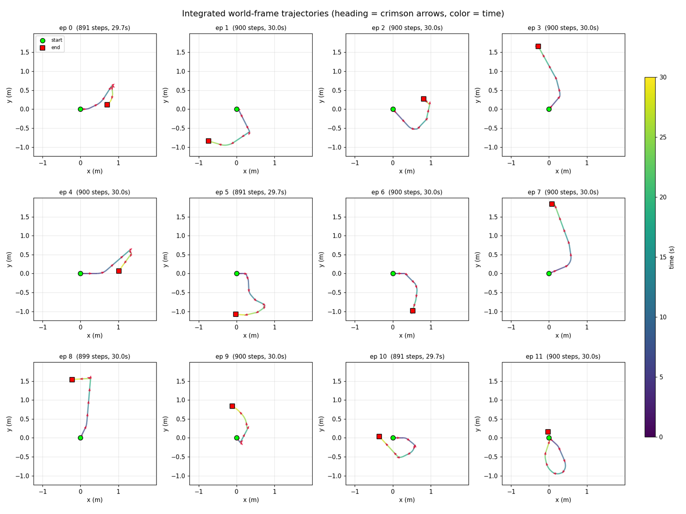
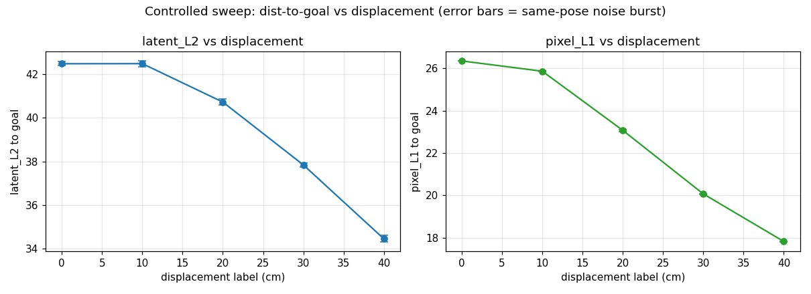
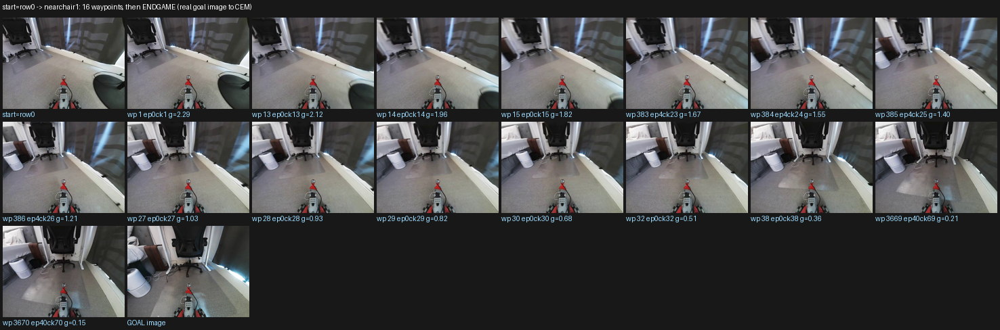

TL;DR
I taught a LeKiwi mobile robot to drive to a photograph — show it an image taken
somewhere in the room, and it finds its way there. The whole stack is learned from
50 tele-operated episodes (~25 minutes, 45K frames) from a single overhead
camera: a diffusion world model imagines candidate futures, a sampling-based planner picks
actions whose imagined outcome looks most like the goal, and a 4,500-node graph of moments
from the training data carries it to goals beyond the model's local horizon. No maps, no
depth sensor, no localization system. This post is the full build log — including the
failures: a dead action signal, a camera that hid translation, a latent space that
hallucinated, and a route planner that argued with itself.
1 · The problem and the bet
Beat: classical nav = SLAM + localization + path planning, heavy and
sensor-hungry. The bet: a world model trained on raw experience can replace all of it for
goal-image navigation — even with a comically small dataset. Frame "small data" as the point
of the project, not a compromise. End with the spec: one overhead fisheye-ish camera, 2-D
action (forward velocity, yaw rate), goal given as a photo.
2 · The robot and the data
Beat: LeKiwi (LeRobot ecosystem, kiwi-drive base), top camera at ~55°.
Data: 50 teleop episodes, 44,926 frames @30 Hz, exploratory driving (NOT goal demos).
Action space [x.vel 0–0.1 m/s, ω ±30°/s], SE(2)-integrated into (Δx, Δθ) chunks.
Figures: assets/world_trajectories.png (integrated paths of all 50 episodes),
assets/chunk_deltas.png (action distribution).

3 · A world model that imagines driving
Beat: NanoWM diffusion world model — given context frames + a candidate
action chunk, predict future frames in latent space. Explain frame_interval (temporal stride)
and why it matters for action SNR. Figure: assets/long_0_cmp.mp4 (predicted vs ground truth,
12-step horizon) — the "it actually imagines" moment.
4 · Run 001: dead on arrival
Beat: first training run overfits by epoch ~3; action-conditioning
diagnostic fails (action-embed RMS 0.0088 ≈ noise). The model ignored the actions. Honest
numbers, fast pacing — this section sets up the debugging arc.
5 · Is translation even visible? Debugging the signal
Beat: the best section of the first act — hypothesis ("raise frame interval")
tested without retraining via the f-sweep; result: rotation strong (corr 0.64–0.70), translation
weak → wrong conclusion nearly adopted ("camera can't see translation") → controlled
stationary-vs-translation contrast refutes it: AUC 0.94–0.98, signal scales with f. Root cause
was training-side (overfitting + low SNR at f=5), not physics. Figures:
assets/fsweep_heatmap.png, assets/stationary_auc.png (pick best from viz/signal-fsweep and
viz/stationary-vs-translation).
6 · Run 002 and picking the checkpoint
Beat: retrain at f=10, 12K steps, best-val checkpointing. Action branch
alive (gt < zero < random). Rollout quality across checkpoints is U-shaped → step-8000 chosen.
Lesson: val loss is not rollout quality. Figure: assets/action_diagnostic.png + motion rollout
videos (assets/rotation_0_cmp.mp4 / translation_0_cmp.mp4 in a row2).
7 · Planning by imagination: CEM in latent space
Beat: MPC loop — sample 32 action chunks, roll each out in the world model,
score imagined endpoint vs goal in latent space, refine ×3 (CEM), execute the first chunk,
repeat. Offline gates on 35 stratified scenes: beats no-move 100%, reached_ratio ~1.0,
100% first-chunk sign agreement, dxErr ~1 cm; DDIM=3 holds at ~7 s/replan. Diagram needed:
the observe→imagine→score→act loop (hand-author SVG). Table of the gate results.
8 · Touching reality: transport and open-loop replay
Beat: short section. RTT 14–16 ms over an SSH reverse tunnel (H100 in a
datacenter drives a robot in my room), sign conventions pinned, open-loop chunk replay error
~0 cm even on a 117° pivot. Figure: assets/replay_filmstrip.png (from viz/lekiwi_6b1).
9 · First closed-loop run: nothing happens
Beat: the robot just… sits and wiggles. dist-to-goal flat for 22 steps.
Root cause: wide overhead camera ⇒ beyond ~1 m the latent landscape is FLAT — the goal image
and the current view differ by almost nothing the metric can see. The objective and the camera
are co-designed, not independent. Figure: assets/dist_sweep_curve.png (latent-L2 vs physical
displacement — the flat tail is the whole story).

10 · Re-capture the goal → first arrival
Beat: re-shooting the goal photo on-axis, inside the basin → first REACHED
(10 steps, then 14 at a tighter threshold). Short triumphant section; note this still only
works near the goal — foreshadow the graph.
11 · The latent space was lying: the semantic pivot
Beat: SD-VAE latents hallucinate plausible-but-wrong content out of
distribution → distance to goal becomes meaningless at range. Pivot: freeze a DINOv2 encoder,
make the world model predict ITS patch tokens (x0-prediction). Pixels become semantics; the
metric becomes token cosine. C0 probe matrix passed kill-switch. Figure:
assets/c1_smoke_strip.png (token→RGB decode strip).
12 · The semantic stack on the robot
Beat: 3/3 arrivals including the exact goal that failed under flat-L2.
Cross-session goals (photo taken days earlier, different lighting) — counters the
memorization critique. Keep short.
13 · Beyond the basin: a graph of remembered moments
Beat: the dataset itself is a map. Every ~4th training frame becomes a node
(4,500 nodes); temporal edges along episodes; "weld" edges where two episodes pass through the
same place (direction-certified; soft welds carry a routing penalty). Dijkstra to the goal,
hand the planner waypoints spaced to the measured CEM basin (~2τ ≈ 4 chunks ≈ 90% one-step
descent reliability — show the calibration numbers). Figures: assets/route_montage.png
(waypoint frames along a route), assets/goal_panel.png.

14 · Three failures on the way to the first graph success
Beat: failure→fix ×3, then the headline. (1) soft-weld routing penalties
contaminated the waypoint lookahead → 1-hop crawl → track raw progress separately;
(2) localization flip-flop between lookalike nodes → route thrash → hysteresis + committed-path
stickiness; (3) near-identical waypoint frames gave CEM no gradient → 5-hop minimum spacing.
Then: REACHED nearpurifier — 129 steps, 40-hop route, tracked the whole way, endgame closed
0.30→0.08. Figure: assets/route_strip_subgoals.png (the live viewer's subgoal strip);
optionally a dist-to-goal + graph_dist trace if extracted from the .rrd.
15 · Honest limitations, and part 2
Beat: candor section — one corner of one room; goal-image-dependent endgame
floor (one goal closes to 0.08, another hovers at 0.30); 7.3 s replans = stop-and-go motion
(speedup plan exists: bf16 + compile + warm-start → ~1 s); graph nodes come from the same data
the WM trained on. Part 2: full-room recollection, multi-camera, faster replans, continuous
control. Close with what 25 minutes of data bought.
Code, training configs, and the full experiment log are on GitHub. Built on LeRobot (LeKiwi), NanoWM, and frozen DINOv2 features.